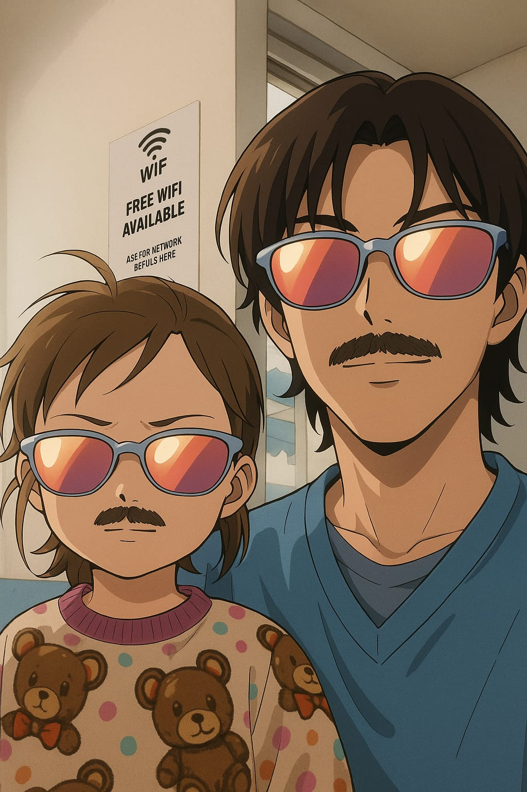

Nossa historia de amor
Nossa historia começa antes de ter 'nos', começa só comigo
Minha historia começa meio bizarro, começa comigo jogado no sofa da casa da minha tia todo vomitado de tanto beber mais o importante é oque acontece no dia seguinte que resolvi ir ate uma igreja que ficava perto de casa, chegando la vi um pessoal que ja conhecia pois ja tinha congregado la anos passado, entao fico mais facil me adapitar, apos mais ou menos 5 meses eu ja tinha me batizado e ja participava do ministerio de louvor.
Tempo passou ate que um dia as pessoas começaram a me incomodar querendo me conseguir uma namorada, sinceramente eu não tava ligando pra isso, eu só queria Deus e me decidi que não iria me apaixonar.
Tempo passo e do nada aparece uma nova familia na igreja, a familia 'Bispo' e nessa familia tinha uma menina chamada Alice, foi amor a primeira vista, logo quando meus olhos encontraram os dela eu ja sabia que ela tinha algo muito expecial, só que avia um problema... ela estava acompanhada....
Um tempo depois eu descobri q era irmão dela mais ate então eu não sabia por isso comecei a evitar contato visual com ela, ate q no dia das crianças de 2023 eu e ela ficamos responsaveis por ajudar, eu sendo o 'Tio do pula-pula' e ela ficou no brinquedo ao lado do meu, era duas pessoas em cada brinquedo mais minha parceira ficou só no brinquedo aonde a Alice estava fazendo ela vir para o pula-pula em q eu estava, e la nos conhecemos melhor, ficamos a festa inteira juntos e conversando, ela era incrivel lembro ate hoje do sorriso timido dela do jeito que ela me olhava... Era incrivel.

No dia seguinte foi totalmente diferente a gente nem se olhava, e eu comecei a achar que eu tinha me equivocado, que não tinha rolado clima nenhum, que era tudo coisa da minha cabeça, tempos passaram ate que fomos conhecer uma igreja chamada Mevan, foi um culto de jovens e percebi que ela ficava toda hora me olhando, mais so ignorei.
No final do culto ela falou com o pastor da nassa igreja dizendo que gostaria de aprender a tocar bateria, imediatamente o pastor escolheu o outro baterista pra ensinar ela mais tinha um problema, a irmã dela gostava dele então o pastor disse que eu iria ensinar ela, logo quando ele venho falar comigo eu logo abri um sorriso e aceitei ensiar ela mais o pastor deu uma condiçao nós não podiamos misturar sentimento... (inocente) .
Então comecou as nossa aulas e cada dia ela aparecia mais linda.
Um dia eu mandei menassagem pra ela pra mandar alguns exercicios pra ela praticar, e com uma coragem que ate hoje não sei da onde ela tirou ela me mandou menssagem perguntando como eu estava, eu sem saber oq respoinder eu falei 'Estou bem, so preocupado com o futuro do brasil'... (é a menina venho flerta comigo e eu falei de politica) mais ela relevou e conseguimos cria diversos assunto era tanto nassunto que não tinha tempo pra falar tudo, e um dia era la pelas 21 da noite ela pediu pra me ligar pra contar uma sonho q ela teve...
(O sonho se baseava em ela em um lugar com uma pessoa que ela gostava, pelo oque lembro era em um parque e ela estava com essa pessoa que não disse o nome, em algum momento do sonho eles deram as mãos e la eu percebi que essa pessoa era eu...)
Conversa vai conversa vem e quando vi ja tinha passado das 5 da manhã, fizemos isso diversas vezes e estavamos cada vez mais proximos na igreja
E essa nossa priximidade chamou a atencao de nossos pais ate que colocaram a gente na parede falaram que a gente tava muito proximos e isso nao era certo teriamos que comecar uma oraçao pra saber se Deus aceitaria o nosso namoro, eu nao entendi muito bem so sabia que apos os 8 meses de oracao talves eu teria uma namorada.
Apos o começo da nosssa oraçao teve um retiro e ela nao entendia muito como funcionava (em um retiro inguem pode falar com nunguem) e ela achou que eu estava ignorando ela
Na ida do retiro nos sentamos um do lado do outro no onibus e ela se deito no meu ombro, a mãe dela não gostou nada disso